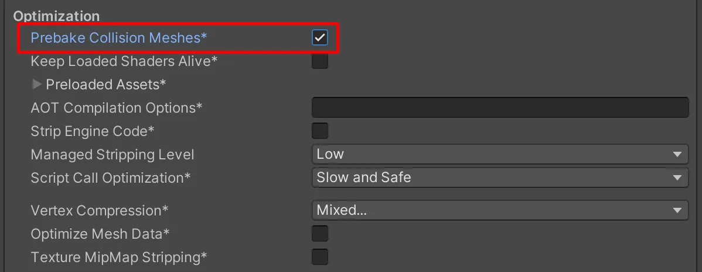
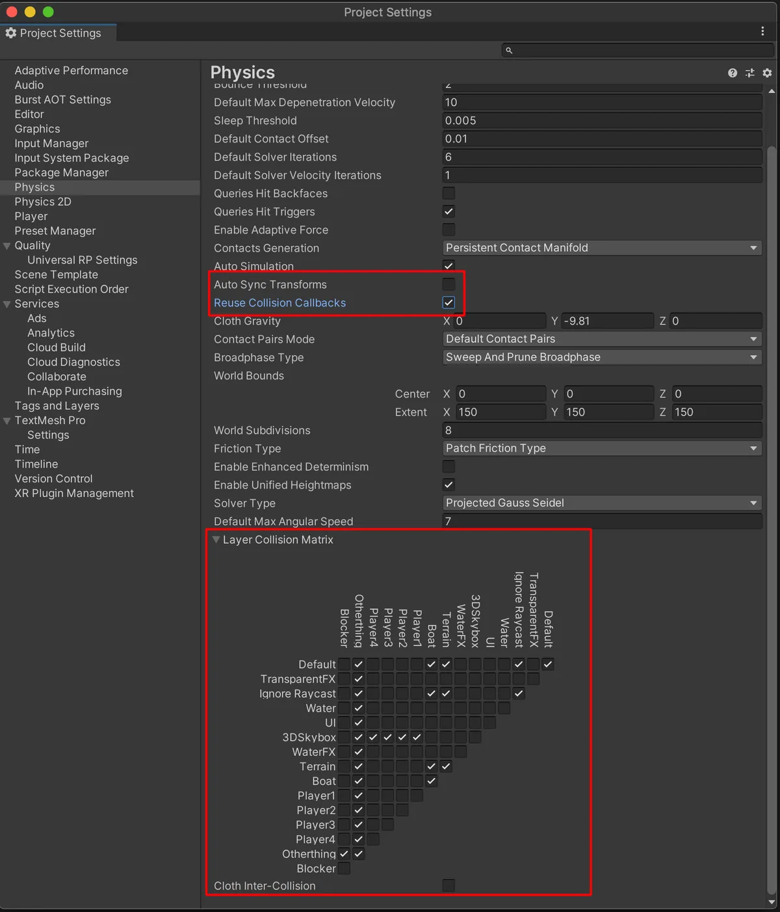
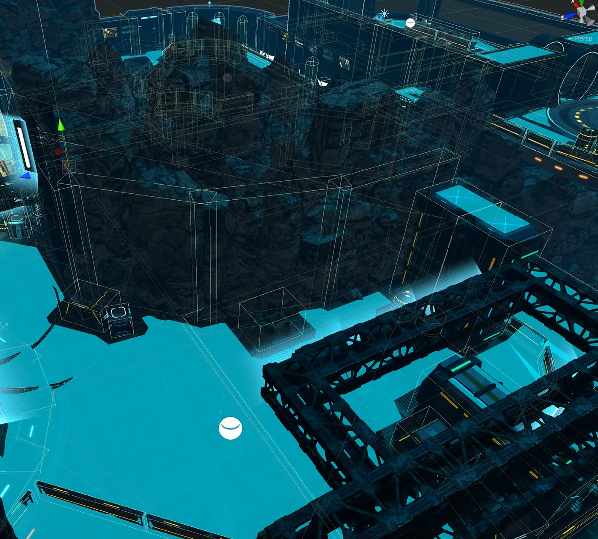
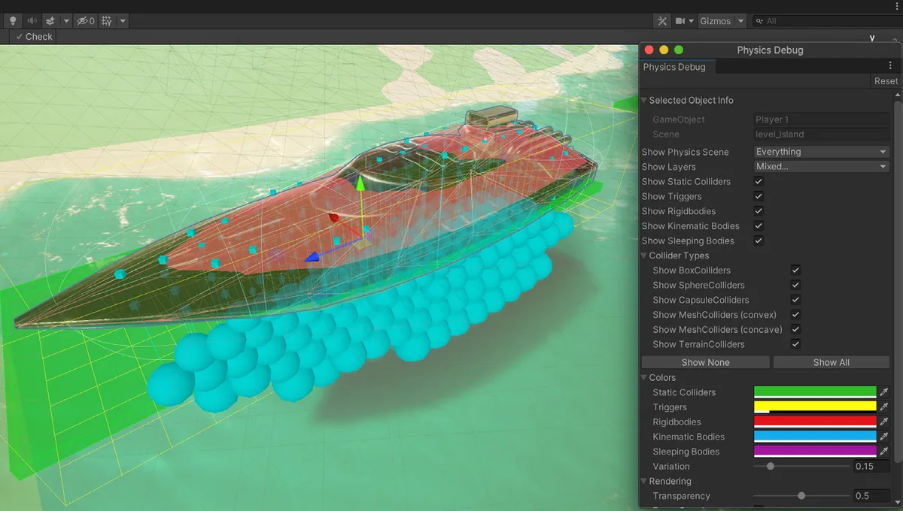

物理（Physics）
Unity 内置的物理系统（Nvidia PhysX）在移动设备上可能开销很大。以下这些建议或许能帮助你挤出更多每秒帧数。
优化你的设置
在 PlayerSettings 中，只要有可能就勾选 Prebake Collision Meshes。
同时请务必调整你的物理设置（Project Settings > Physics）。尽可能简化你的 Layer Collision Matrix。
- 禁用 Auto Sync Transforms，并启用 Reuse Collision Callbacks。
- 启用 Prebake Collision Meshes。

密切关注 Profiler 的 Physics 模块，以便发现性能问题。
简化碰撞体
网格碰撞体（mesh collider）可能开销很大。用更简单的原始碰撞体（primitive collider）或网格碰撞体来替代更复杂的网格碰撞体，以近似原始形状。

使用物理方法移动 Rigidbody
使用 MovePosition 或 AddForce 这类类方法来移动你的 Rigidbody 对象。直接平移它们的 Transform 组件会导致物理世界重新计算，这在复杂场景中可能开销很大。请在 FixedUpdate 而不是 Update 中移动物理刚体。
固定 Fixed Timestep
Project Settings 中默认的 Fixed Timestep 为 0.02（50 Hz）。请修改它，使其与你的目标帧率相匹配（例如 30 fps 对应 0.03）。否则，如果运行时帧率下降，就意味着 Unity 会在每帧中多次调用 FixedUpdate，对于物理内容繁重的项目，这可能造成 CPU 性能问题。
Maximum Allowed Timestep 限制了在帧率下降的情况下，物理计算和 FixedUpdate 事件可以占用多少时间。降低该值意味着物理和动画可能变慢，但同时也会降低它们在性能卡顿期间对帧率的影响。

使用 Physics Debugger 进行可视化
使用 Physics Debug 窗口（Window > Analysis > Physics Debugger）来帮助排查有问题的碰撞体或异常情况。它会以颜色编码的指示方式，展示哪些 GameObject 之间应当能够相互碰撞。
更多信息请参阅 Unity 文档中的 Physics Debug Visualization。
